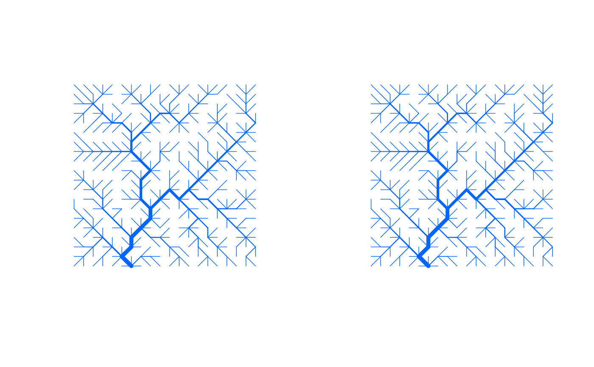

Perform OCN Search Algorithm on an Existing OCN
continue_OCN.RdFunction that performs the OCN search algorithm on an existing OCN.
Usage
continue_OCN(OCN,nNewIter, coolingRate=NULL, initialNoCoolingPhase=0,
displayUpdates=1, showIntermediatePlots=FALSE, thrADraw=NULL,
easyDraw=NULL, nUpdates=50)Arguments
- OCN
A
riverobject (as generated bycreate_OCN).- nNewIter
Number of iterations that the OCN search algorithm performs.
- coolingRate
Parameter of the function used to describe the temperature of the simulated annealing algorithm. See
create_OCN. IfNULL, it is set equal to the last element ofOCN$coolingRate.- initialNoCoolingPhase
Parameter of the function used to describe the temperature of the simulated annealing algorithm. See
create_OCN.- nUpdates
Number of updates given during the OCN search process (only effective if
any(displayUpdates,showIntermediatePlots)=TRUE.).- showIntermediatePlots
If
TRUE, the OCN plot is updatednUpdatestimes during the OCN search process. Note that, for large lattices,showIntermediatePlots = TRUEmight slow down the search process considerably (especially wheneasyDraw = FALSE).- thrADraw
Threshold drainage area value used to display the network (only effective when
showIntermediatePlots = TRUE).- easyDraw
Logical. If
TRUE, the whole network is displayed (whenshowIntermediatePlots = TRUE), and pixels with drainage area lower thanthrADraware displayed in light gray. IfFALSE, only pixels with drainage area greater or equal tothrADraware displayed. Default isFALSEifdimX*dimY <= 40000, andTRUEotherwise. Note that settingeasyDraw = FALSEfor large networks might slow down the process considerably.- displayUpdates
State if updates are printed on the console while the OCN search algorithm runs.
0No update is given.
1An estimate of duration is given (only if
dimX*dimY > 1000, otherwise no update is given).2Progress updates are given. The number of these is controlled by
nUpdates
Value
A river object analogous to the input OCN. Note that, unlike in create_OCN, OCN$coolingRate and OCN$initialNoCoolingPhase are now vectors (of length equal to the number of times continue_OCN has been performed on the same OCN, plus one) that store the full sequence of coolingRate, initialNoCoolingPhase used to generate the OCN. Additionally, the vector OCN$nIterSequence is provided, with entries equal to the number of iterations performed by each successive application of create_OCN or continue_OCN. It is OCN$nIter = sum(OCN$nIterSequence).
Examples
set.seed(1)
OCN_a <- create_OCN(20, 20, nIter = 10000)
set.seed(1)
OCN_b <- create_OCN(20, 20, nIter = 5000)
OCN_b <- continue_OCN(OCN_b, nNewIter = 5000)
old.par <- par(no.readonly = TRUE)
par(mfrow=c(1,2))
draw_simple_OCN(OCN_a)
draw_simple_OCN(OCN_b) # the two OCNs are equal

par(old.par)